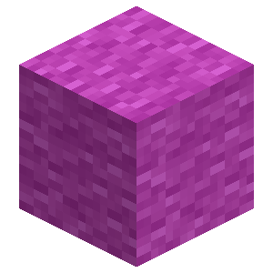
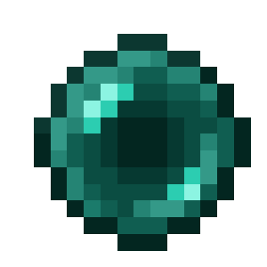
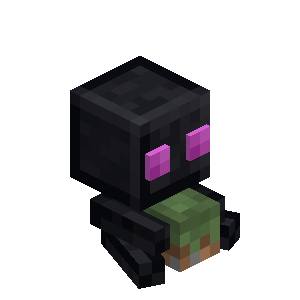

About
The enderman plushie is a decorative block inspired by the enderman mob!
Config
Set the Enable Enderman Plushie option to Yes (or true) to use them, or No (or false) to hide them. Yes (or true) is the default setting.
Grass Block Color
The plushie’s grass block changes color to match its current biome.
Placement
When placing an enderman plushie, it will face the player.
Breaking
Enderman Plushies can be broken with any item or by hand!
Crafting Recipe






Enderman Plushie
| Renewable | Yes (Crafting) |
| Stackable | Yes (64) |
| Tool | Any tool |
| Blast Resistance | 0.2 |
| Hardness | 0.2 |
| Luminous | No |
| Transparent | No |
| Catches fire from lava | Yes |